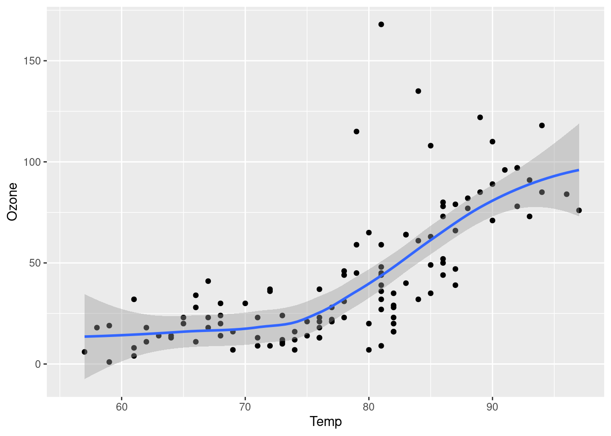

library(ggplot2)
ggplot(airquality, aes(Temp, Ozone)) +
geom_point() +
geom_smooth(method = "loess")
Tradicionalmente, el proceso de investigación se puede describir de esta manera:

No obstante, este flujo de información muchas veces es insuficiente para comunicar cómo se generó el conocimiento, permitir el reuso de los datos y finalmente facilitar la reproducibilidad o reproducción del estudio. Por un lado en una investigación hay muchos pasos que generan conocimiento pero no llegan a los documentos finales (con suerte algunos llegan al material suplementario o a los repositorios de código que acompañan las investigaciones). Por otro lado, la gran cantidad de datos que existen actualmente permiten su utilización de distintas maneras. A veces en diferentes áreas o a veces en forma de síntesis. Esto hace más eficiente el uso de los recursos económicos y de los productos de la ciencia. Sin embargo, la falta de documentación en los conjuntos de datos dificulta o imposibilita ese proceso.
Adicionalmente, la robustez de los resultados en una investigación se beneficia de la confirmación de los mismos, ya sea mediante estudios independientes que los repitan o mediante la exploración de los análisis para reproducir los resultados de los autores. Sin embargo, no existe una manera estandarizada de comunicar la forma en que se deben ejecutar los análisis en un proyecto de investigación complejo, de forma en que sea reproducible. En algunos casos se hace mediante el texto, en otros mediante archivos con código, sin embargo, muchas veces no es suficiente y en el momento en el que queremos repetir o reproducir un análisis (incluso de nuestras propias investigaciones de tiempo atrás) no lo logramos.

Una opción que existe es la generación de documentos que combinen texto/imágenes/diagramas con código y datos. Múltiples documentos se pueden ligar de manera que el análisis completo sea reproducible y las decisiones de los autores sean claras.
Quarto fue creado como un programa aislado que permite la creación de documentos que mezclan texto con código, además de que está diseñado para permitir el uso de diferentes lenguajes de programación (R, python, Julia, Observable JS). Se puede utilizar en diferentes plataformas y permite la creación de diferentes clases de documentos (presentaciones, html, pdf, artículos, libros, dashboards), que tienen diferentes capacidades (dinámicos vs estáticos).
Es una herramienta para escribir texto simple que originalmente servía para escribir en la web.
“Markdown is a text-to-HTML conversion tool for web writers. Markdown allows you to write using an easy-to-read, easy-to-write plain text format, then convert it to structurally valid XHTML (or HTML).” John Gruber
Es un tipo de “lenguaje” que se caracteriza porque se puede leer sin un formato especial, a diferencia de otros lenguajes como HTML.
La sintaxis es simple y no requiere de aprenderse demasiados comandos. En realidad puedes simplemente utilizarlo como documento de texto.
En la página de ayuda de Quarto puedes encontrar la mayoría de la sintáxis básica que necesitarás.
Una traducción al español de esa página la puedes encontrar en el archivo intro_markdown.qmd del taller.
| Markdown Syntax | Output |
|---|---|
|
https://quarto.org |
|
Quarto |
|
Markdown Basics |
|
Markdown Basics - Links & Images |
|
Markdown Basics - Links & Images |
|
|
Para agregar un bloque de código (“chunk”) puedes utilizar el atajo ctrl + alt + i
El bloque se compone de diferentes partes
```{r}
#| <opciones del chunk>
<codigo>
```{r} - puedes usar {python}, {markdown}, etc.#| al principio, seguido de la etiqueta que queremos utilizar y la opción para esa etitqueta. Por ejemplo para asignar un nombre al chunk usamos #| label: fig-airqualityEjemplo:
library(ggplot2)
ggplot(airquality, aes(Temp, Ozone)) +
geom_point() +
geom_smooth(method = "loess")
Las opciones más comunes que se pueden modificar en los chunks son:
#| label: fig-airquality: nombre de la figura/tabla/chunk para poder ser referenciados más adelante#| echo: true: mostrar (true) o no (false) el código#| eval: true: evaluar o no el código